¿Perdiste o encontraste una mascota? Llama al (702) 555-GUAU para recibir ayuda
¿Perdiste o encontraste una mascota? Llama al (702) 555-GUAU para recibir ayuda
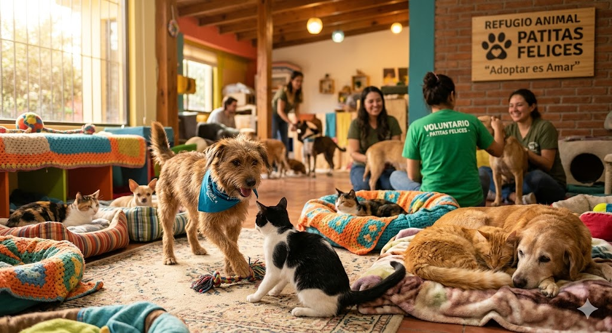
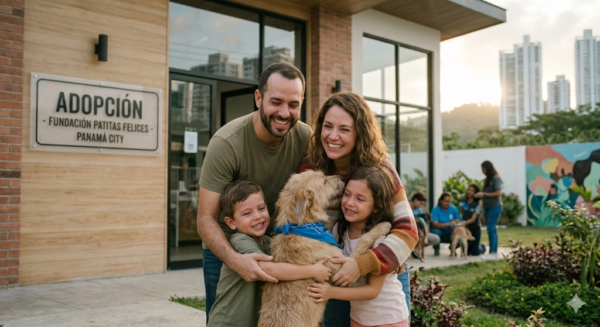
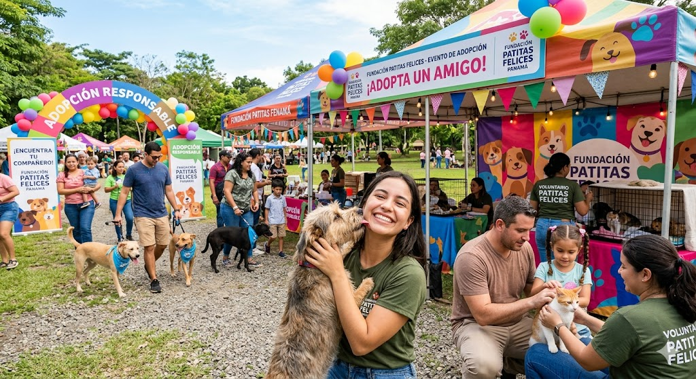
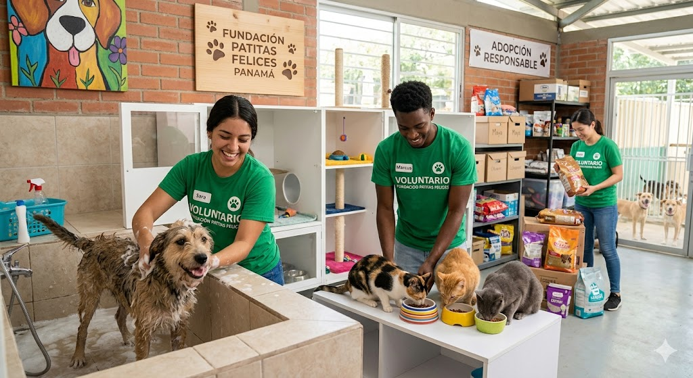
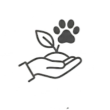
En Patitas Felices trabajamos en el rescate, atención y reubicación de perros y gatos en situación de abandono o vulnerabilidad. Nuestro equipo coordina jornadas de adopción responsable, atención veterinaria básica, procesos de recuperación y campañas de concientización sobre el cuidado adecuado de los animales. También impulsamos actividades educativas sobre esterilización, prevención del maltrato y tenencia responsable de mascotas dentro de la comunidad. Cada rescate implica seguimiento, alimentación, cuidados médicos y acompañamiento hasta encontrar un hogar seguro y estable para cada animal.

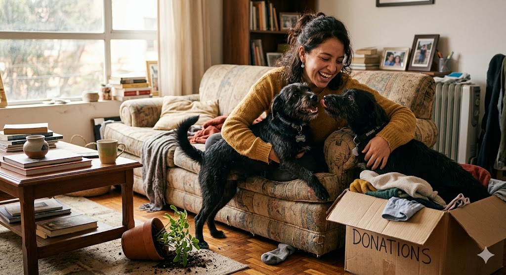
“Adopté a Bruno y Clara hace casi un año. La primera semana Bruno
escondió tres medias, rompió una planta y se quedó dormido dentro
de una caja de ropa limpia. Honestamente, fue imposible no
encariñarnos. La fundación nos ayudó bastante durante el proceso y
siempre estuvieron pendientes de cómo se estaban adaptando.”
-Daniela Rojas
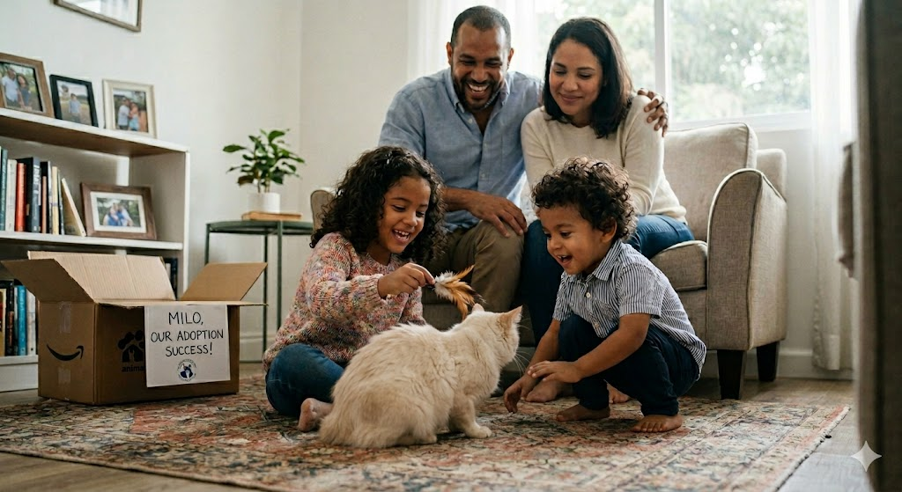
“En casa queríamos adoptar desde hace tiempo, pero teníamos muchas
dudas porque tenemos dos niños pequeños. La fundación nos orientó
desde el inicio y nos recomendaron un gato que se adaptaba bien a
familias con niños. Hoy ‘Milo’ ya es parte de la rutina de todos.”
-Patricia Gómez
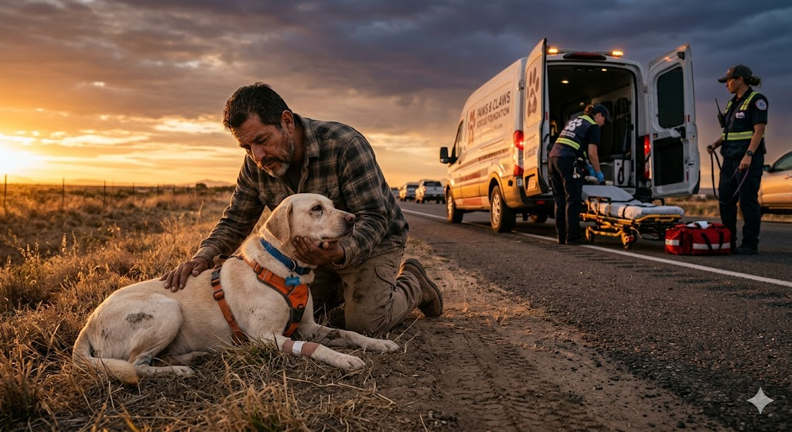
“Encontré a Luna después de un accidente en la carretera. Pensé
que no iba a sobrevivir. Me comuniqué con Patitas Felices y en
menos de una hora ya estaban ayudando con el traslado y la
atención veterinaria. Verla recuperarse y luego encontrarle una
familia fue algo que todavía me cuesta explicar.”
-Miguel Herrera
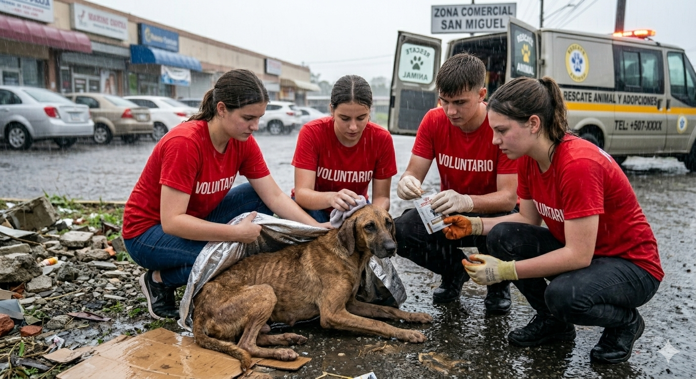
Perro encontrado en condición de desnutrición cerca de una zona comercial. Recibió tratamiento veterinario durante dos meses antes de ser adoptado.
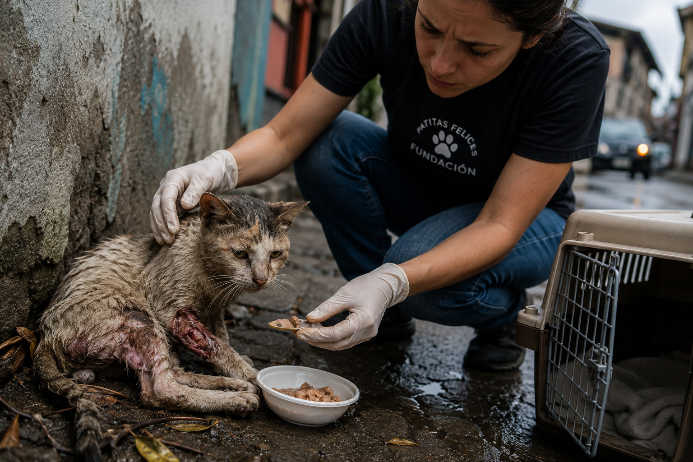
Gata adulta rescatada con una lesión en una de sus patas. Después de cirugía y rehabilitación, fue adoptada por una familia de acogida temporal.
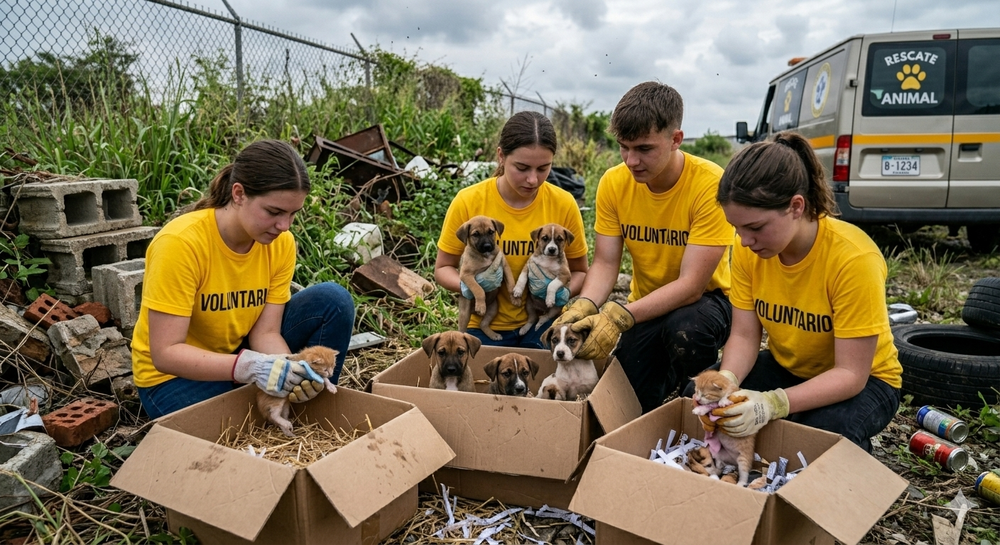
Se rescataron cinco cachorros y dos gatos recién nacidos encontrados dentro de cajas en un terreno vacío. Todos lograron ser ubicados en hogares temporales.